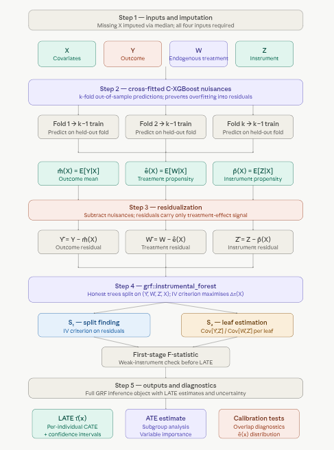
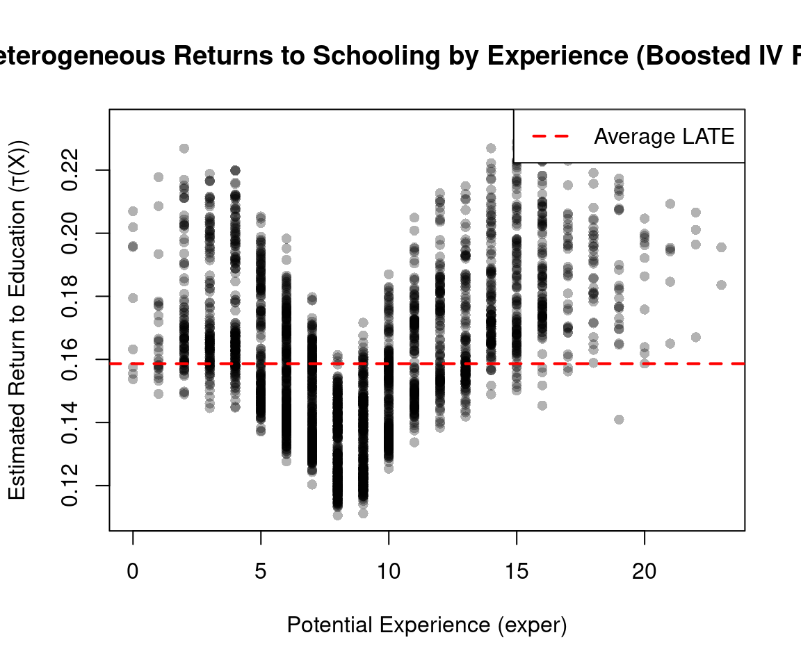
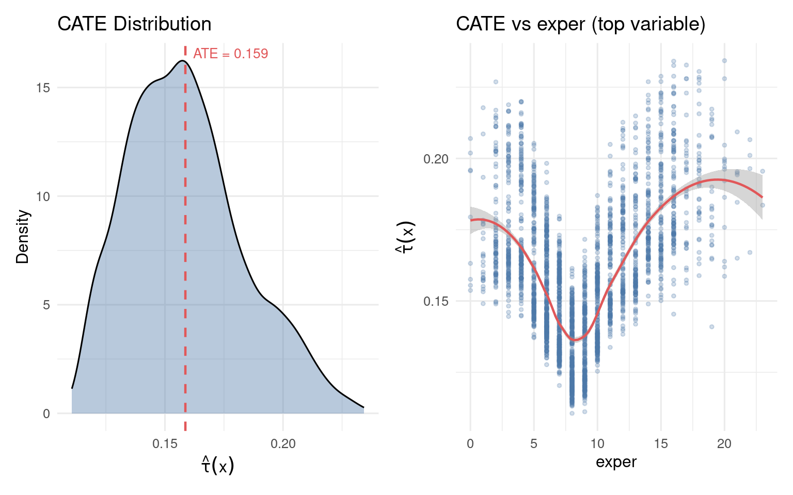
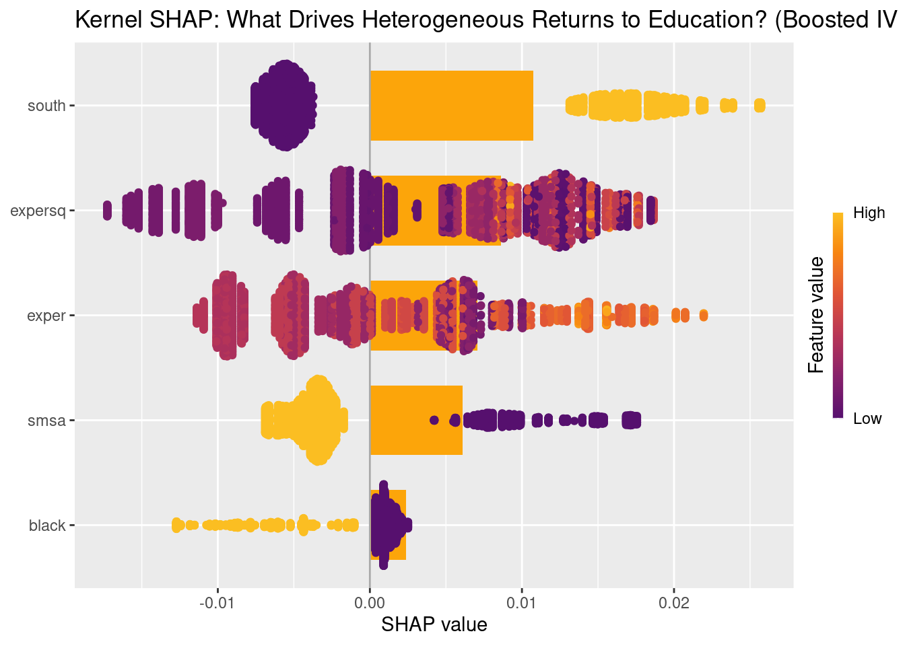
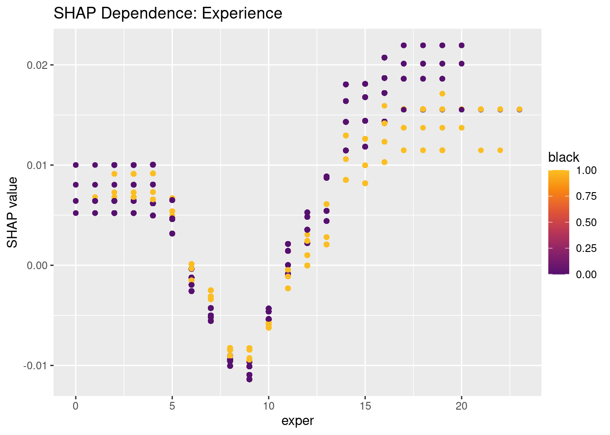
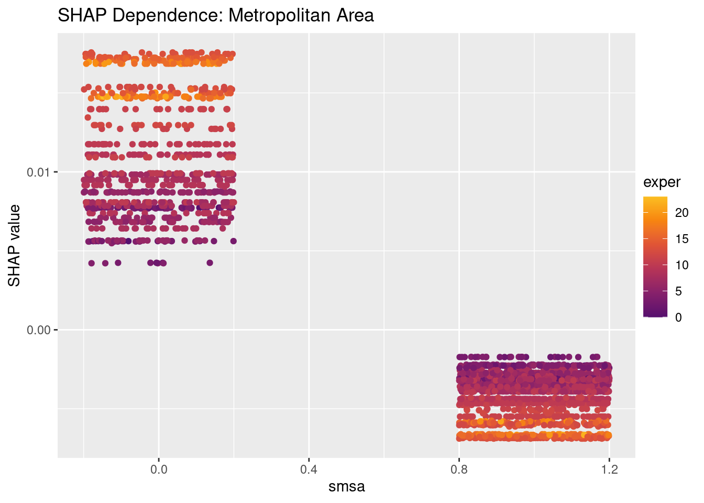

Code
packages <- c(
"tidyverse",
"plyr",
"RCausalML",
"haven",
"car",
"kernelshap",
"shapviz",
"Metrics",
"future",
"future.apply"
)

Boosted IV Forest (Instrumental Causal XGBoost) is a machine learning method that combines cross-fitted C-XGBoost nuisance estimation with Generalized Random Forests (GRF) instrumental forest to estimate conditional local average treatment effects (LATE) in the presence of endogeneity. It uses XGBoost to flexibly estimate \(E[Y|X]\), \(E[W|X]\), and \(E[Z|X]\), residualises the outcome, treatment, and instrument, then fits an instrumental forest on the residuals—delivering robust, heterogeneous LATE estimates when a valid instrument is available.
A Boosted IV Forest estimates heterogeneous treatment effects in settings where treatment assignment is endogenous — that is, correlated with unobserved factors that also affect the outcome. Like a standard Instrumental Forest, it exploits an instrumental variable \(Z\) that shifts treatment \(W\) without directly affecting the outcome \(Y\). The “boosted” part refers to how nuisance functions are estimated: rather than using regression forests in the first stage, it uses C-XGBoost (two-head XGBoost) inside a cross-fitting pipeline, enabling more flexible capture of nonlinearities and interactions. The second stage remains a standard grf::instrumental_forest, preserving GRF’s interpretability, honest estimation, and asymptotically valid confidence intervals.
The result is a two-stage estimator that combines the best of both worlds: XGBoost’s strength on tabular data in the first stage, and GRF’s principled causal inference machinery in the second.
The quantity of interest is the Conditional Local Average Treatment Effect (LATE) — the treatment effect for compliers (units whose treatment status changes because of \(Z\)), allowed to vary with covariates:
\[\tau(X) = \frac{\text{Cov}[Y - \hat{m}(X),\; Z - \hat{p}(X) \mid X]}{\text{Cov}[W - \hat{e}(X),\; Z - \hat{p}(X) \mid X]}\]
where the three nuisance functions are:
After residualizing, the numerator \(\text{Cov}[\tilde{Y}, \tilde{Z} \mid X]\) captures how much the instrument moves the outcome; the denominator \(\text{Cov}[\tilde{W}, \tilde{Z} \mid X]\) captures how much the instrument moves the treatment. Their ratio isolates the local causal effect of \(W\) on \(Y\) — purged of confounding — for the complier subpopulation with covariates \(X = x\).
A standard instrumental forest estimates \(\hat{m}\), \(\hat{e}\), and \(\hat{p}\) using regression forests (or skips nuisance estimation entirely if the instrument is assumed randomized). This works well when nuisance functions are smooth and additive, but can underfit when outcomes and treatments depend on complex interactions between covariates.
Replacing the first stage with cross-fitted C-XGBoost addresses this directly:
grf::instrumental_forest on residualized \((\tilde{Y}, \tilde{W}, \tilde{Z}, X)\) — so the improvement is surgical: better nuisances, same inference.The theoretical justification is the Neyman orthogonality of the GRF moment condition: the LATE estimator is locally insensitive to small errors in nuisance estimation, meaning flexible first-stage models improve finite-sample performance without introducing asymptotic bias, as long as nuisances converge at a reasonable rate.
The Boosted IV Forest inherits the standard IV assumptions:

A few things worth highlighting from the pipeline:
Step 2 (cross-fitting) is the critical upgrade over a standard instrumental forest. Fitting nuisance models on the full training set and then predicting on the same data induces overfitting into the residuals — the residuals appear smaller than they should be, which inflates the apparent signal in the IV covariance. K-fold cross-fitting breaks this feedback loop by ensuring every nuisance prediction is made out-of-sample. The theoretical grounding is Neyman orthogonality: the IV moment condition is locally insensitive to small errors in \(\hat{m}\), \(\hat{e}\), and \(\hat{p}\), so cross-fitted nuisances at a moderate convergence rate are sufficient for root-\(n\) inference on \(\tau(X)\).
Step 3 is where the two methods meet. The residuals \((\tilde{Y}, \tilde{W}, \tilde{Z})\) carry only the variation attributable to treatment effect heterogeneity — all confounding signal that could be explained by \(X\) has been subtracted. GRF then operates on clean data, splitting the covariate space to find where \(\text{Cov}[\tilde{Y}, \tilde{Z}] / \text{Cov}[\tilde{W}, \tilde{Z}]\) differs most across subgroups.
The first-stage F-statistic in step 4 is not optional. A weak instrument (\(F < 10\) is a common rule of thumb) means \(Z\) explains little variation in \(W\) after partialling out \(X\), which causes the denominator \(\text{Cov}[\tilde{W}, \tilde{Z} \mid X]\) to be near zero. The resulting LATE estimates become extremely noisy and potentially severely biased — the XGBoost first stage cannot rescue a fundamentally weak instrument.
This tutorial uses the Card (1995) dataset to estimate returns to education (effect of education on log wages) using proximity to a 4-year college as an instrument, implemented with the BoostedIVForest class from the RCausalML package (see R/causalBoosted_IV.R).
Following R packages are required to run this notebook. If any of these packages are not installed, you can install them using the code below:
tidyverse, plyr, RCausalML, haven, car, kernelshap, shapviz, Metrics, future, future.apply
packages <- c(
"tidyverse",
"plyr",
"RCausalML",
"haven",
"car",
"kernelshap",
"shapviz",
"Metrics",
"future",
"future.apply"
)# Install missing packages
# new_packages <- packages[!(packages %in% installed.packages()[, "Package"])]
# if (length(new_packages)) install.packages(new_packages)# Load packages with suppressed messages
invisible(lapply(packages, function(pkg) {
suppressPackageStartupMessages(library(pkg, character.only = TRUE))
}))# Check loaded packages
cat("Successfully loaded packages:\n")Successfully loaded packages: [1] "package:future.apply" "package:future" "package:Metrics"
[4] "package:shapviz" "package:kernelshap" "package:car"
[7] "package:carData" "package:haven" "package:RCausalML"
[10] "package:plyr" "package:lubridate" "package:forcats"
[13] "package:stringr" "package:dplyr" "package:purrr"
[16] "package:readr" "package:tidyr" "package:tibble"
[19] "package:ggplot2" "package:tidyverse" "package:stats"
[22] "package:graphics" "package:grDevices" "package:utils"
[25] "package:datasets" "package:methods" "package:base" We estimate the causal effect of education on wages using proximity to a 4-year college as an instrument (Card, 1995).
lwage = log(wage) — outcome (Y)educ = years of education — endogenous treatment (W)nearc4 = grew up near 4-year college — instrument (Z)exper, expersq, black, smsa, south — covariates (X)card_url <- "https://storage.googleapis.com/causal-inference-mixtape.appspot.com/card.dta"
card <- read_dta(card_url)
card <- card %>%
dplyr::mutate(expersq = exper^2) %>%
dplyr::select(lwage, educ, nearc4, exper, expersq, black, smsa, south) %>%
na.omit()
X <- card %>%
dplyr::select(exper, expersq, black, smsa, south) %>%
as.matrix()
Y <- as.numeric(card$lwage)
W <- as.numeric(card$educ)
Z <- as.numeric(card$nearc4) Estimate Std. Error t value Pr(>|t|)
3.373208e-01 8.250044e-02 4.088715e+00 4.451508e-05 linearHypothesis(first_stage, "nearc4 = 0")We use BoostedIVForest with cross-fitting and optional parallelisation. Set future::plan(multisession, workers = K) before $fit() to speed up cross-fitting.
# Ensure xgboost is both installed and attached, so that xgb.DMatrix is available in the workspace
if (!requireNamespace("xgboost", quietly = TRUE)) {
install.packages("xgboost")
}
suppressPackageStartupMessages(library(xgboost)) # Ensures exported functions like xgb.DMatrix are attached
# Optional: parallel cross-fitting (recommended for larger data)
if (!requireNamespace("future", quietly = TRUE)) {
install.packages("future")
}
suppressPackageStartupMessages(library(future))
future::plan(future::multisession, workers = min(4L, future::availableCores() - 1L))
on.exit(future::plan(future::sequential), add = TRUE)
model <- BoostedIVForest$new(
n_folds = 5L,
nrounds = 100L,
forest_args = list(num.trees = 1000L, honesty = TRUE, tune.parameters = "all")
)
model$fit(X, Y, W, Z, verbose = TRUE)[BoostedIVForest] Running instrument diagnostics...
[BoostedIVForest] Stage 1a: Cross-fitting E[Y|X]...
[BoostedIVForest] Stage 1b: Cross-fitting E[W|X]...
[BoostedIVForest] Stage 1c: Cross-fitting E[Z|X]...
[BoostedIVForest] Stage 2: Residualising Y, W, Z...
[BoostedIVForest] Stage 3: Fitting instrumental_forest...
[BoostedIVForest] Fitting complete.model$summary()
BoostedIVForest Model Summary
Configuration
Cross-fitting folds : 5
XGBoost rounds : 100
Forest trees : 0
Training obs : 3010
Covariates (p) : 5
Instrument Diagnostics
cor(Z, W) : +0.1442
First-stage F-stat : 16.72 [strong]
Partial R2(ZW) : 0.0055
Average Treatment Effect
ATE : +0.1587
Std.Err : 0.0013
p-value : 0.0000 [significant]
CATE Distribution
Min / Max : +0.111 / +0.234
Mean / SD : +0.159 / 0.024
Q5 / Q95 : +0.122 / +0.205
Top 5 Variables by Importance
expersq 0.3297
exper 0.3009
south 0.1462
smsa 0.1271
black 0.0960
Calibration Test
(Calibration test not supported for this forest type.)Average Treatment Effect (LATE): 0.159 +/- 0.002 plot(card$exper, tau_hat, pch = 16, col = rgb(0, 0, 0, 0.3),
xlab = "Potential Experience (exper)", ylab = "Estimated Return to Education (τ(X))",
main = "Heterogeneous Returns to Schooling by Experience (Boosted IV Forest)")
abline(h = ate["estimate"], col = "red", lwd = 2, lty = 2)
legend("topright", legend = "Average LATE", col = "red", lwd = 2, lty = 2)
if (requireNamespace("ggplot2", quietly = TRUE)) {
model$plot_cate(top_var = "exper")
}
new_data <- data.frame(
exper = 10,
expersq = 10^2,
black = 0,
smsa = 1,
south = 0
)
new_X <- as.matrix(new_data)
new_pred <- model$predict(X_new = new_X)
cat("Predicted return to education (LATE) for this profile:", round(new_pred$predictions, 3), "\n")Predicted return to education (LATE) for this profile: 0.136 model$subgroup_analysis(quantile = 0.5) Subgroup Analysis
Threshold (Q50) : +0.1566
High group n : 1505 ATE = +0.1782 (SE 0.0021)
Low group n : 1505 ATE = +0.1392 (SE 0.0014)vi <- model$variable_importance()
print(vi) expersq exper south smsa black
0.32968571 0.30093388 0.14620394 0.12713469 0.09604177 library(kernelshap)
library(shapviz)
pred_tau <- function(object, newdata) {
p <- object$predict(X_new = newdata)
p$predictions
}
set.seed(42)
n_bg <- min(50, nrow(X))
bg_idx <- sample(nrow(X), n_bg)
bg_small <- X[bg_idx, , drop = FALSE]
invisible(capture.output({
shap_iv <- kernelshap(
object = model,
X = X,
bg_X = bg_small,
pred_fun = pred_tau,
verbose = FALSE
)
}, type = "output"))
shp_iv <- shapviz(shap_iv)
sv_importance(shp_iv, kind = "both") +
ggtitle("Kernel SHAP: What Drives Heterogeneous Returns to Education? (Boosted IV Forest)")
sv_dependence(shp_iv, v = "exper") +
ggtitle("SHAP Dependence: Experience")
sv_dependence(shp_iv, v = "smsa") +
ggtitle("SHAP Dependence: Metropolitan Area")
n_folds, nrounds, and num.trees for production use.future::plan(multisession, workers = K) before $fit() to parallelise cross-fitting.Boosted IV Forest (Instrumental Causal XGBoost) combines cross-fitted C-XGBoost nuisance estimation with GRF instrumental forest to estimate heterogeneous LATE in the presence of endogeneity. This tutorial used the Card dataset and proximity to college as an instrument to estimate returns to education, demonstrated BoostedIVForest fit, summary, predictions, subgroup analysis, variable importance, calibration, and optional SHAP explanations. The same workflow applies to other IV settings with a valid instrument and covariates.
R/causalBoosted_IV.R — BoostedIVForest implementation.